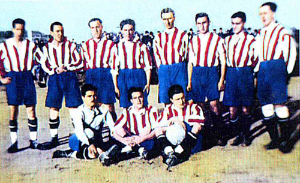
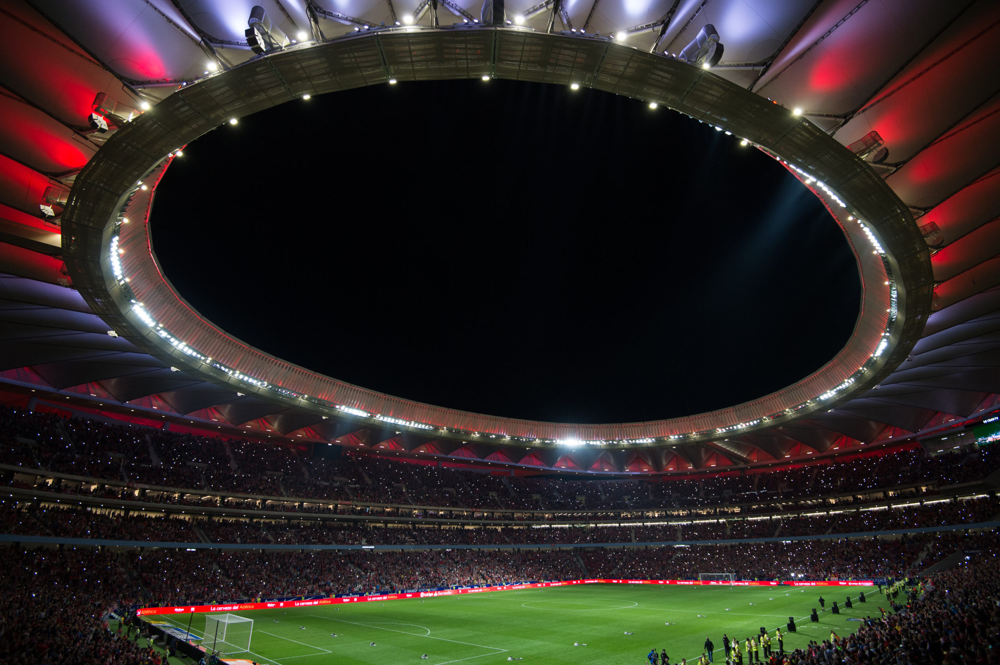
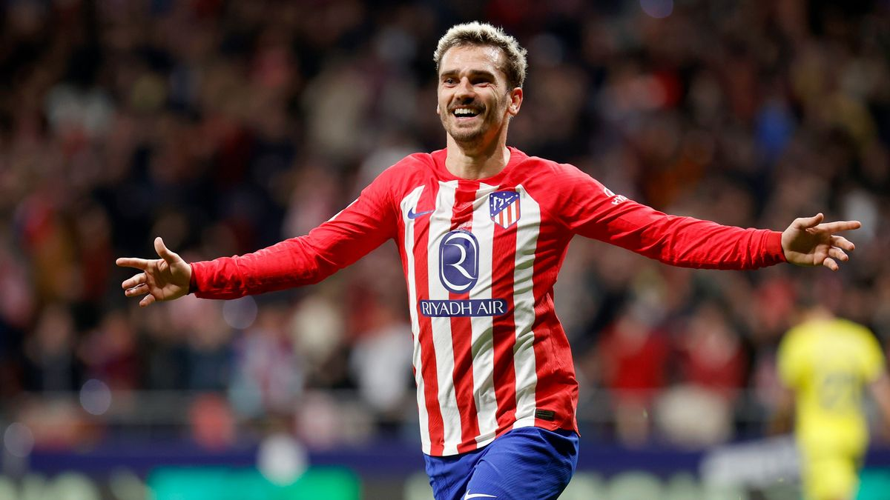
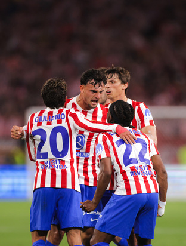
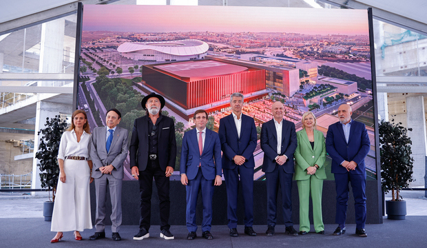
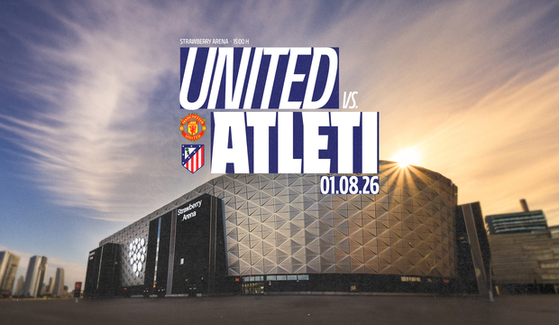

Fearless. Passionate. Red & White.
A fan-made tribute website inspired by Atletico de Madrid.
Explore MoreAbout Atletico Madrid
Atletico de Madrid is one of Spain’s most iconic football clubs, known for passion, discipline, and strong team spirit.
CLUB HISTORY

Founded: 1903The story of Atlético Madrid begins not in the Spanish capital itself, but in the industrial heartland of the Basque Country. On 26 April 1903, a group of three Basque students from Biscay — enrolled at the School of Mining Engineers in Madrid — decided that the city where they were studying deserved a second football team. Already passionate members of Athletic Club de Bilbao, they founded what they initially named Athletic Club Sucursal de Madrid ("Athletic Club Madrid Branch"), explicitly conceiving it as a youth affiliate of the great Bilbao side. The founders brought with them a Basque football culture that was, at the turn of the twentieth century, arguably the most advanced in Spain. The following year, in 1904, the young club was swelled by something unexpected: a batch of dissident members who had fallen out with the board of rival Madrid FC (later Real Madrid). This gave Atlético its first taste of a dynamic that would define it across more than a century — the desire to challenge, disrupt, and resist the established order of Spanish football.

Stadium: Riyadh Air MetropolitanoThe first Estadio Metropolitano, opened in 1923 near Ciudad Universitaria, served as
the club's home for over four decades. When it was sold in the mid-1960s to help finance a
new ground, it was demolished and replaced with university buildings — a symbolic sacrifice
of the past for a hoped-for future. The name "Metropolitano," however, was not forgotten.
From 1966 to 2017, it was the temple of Atlético's faith, the site of their
greatest European nights and their most painful sorrows. Demolition began in 2019 and was
completed in 2020; in its place, the city has constructed a public park bearing the club's
name.
The current Estadio Metropolitano — opened on 16 September 2017. Extensively
reconstructed at a cost well in excess of €300 million, the stadium seats
approximately 70,460 spectators and was immediately recognised as one of the most impressive
arenas in Europe.
It was the first 100% LED-illuminated stadium in the world at the
time of its opening.
For much of their history, Atlético Madrid played direct, physical, intensity-based football without a fixed tactical signature. The 1970s sides under Lorenzo were associated with aggressive pressing and muscular confrontation — earning the "animals" nickname for a brutal European Cup semi-final against Celtic in which three players were sent off and 51 free-kicks were awarded against them. The teams of the 1990s under Antić were more technically sophisticated, built on a compact defensive base with rapid transitions and a midfield of genuine quality. But it is Diego Simeone who has given Atlético its most coherent, globally recognised tactical identity. More recently, with players like Julián Álvarez, Alexander Sørloth, and Ademola Lookman, Simeone has evolved toward a hybrid system — compacting into a 5-3-2 defensively, opening into a 4-4-2 in attack — that reflects both tactical maturity and the changing demands of elite European football.
Squad Highlights

Antoine Griezmann ForwardThe club's all-time leading scorer across his two spells, with over 174 goals. Twice finished third in the Ballon d'Or while at Atleti. His return to the club in 2021 after an ill-fated spell at Barcelona was an act of redemption that the performances of subsequent years ultimately justified.
 Jan Oblak
Goalkeeper
Jan Oblak
Goalkeeper
Since arriving from Benfica in 2014, the Slovenian has been consistently ranked among the two or three best goalkeepers in the world. His 177+ clean sheets and extraordinary save percentage are central to the Simeone era's defensive identity. At 33, he continues to be indispensable.
 Diego Godín
Centre-Back
Diego Godín
Centre-Back
The defensive general of Simeone's best sides. Arguably the best centre-back in world football between 2012 and 2018 — commanding, brave, and decisive. His 2014 Champions League final header against Real Madrid was the most important goal in the club's modern history.
CALENDAR
Breaking News

Elche-Atleti, in action

Live Nation, Oak View Group (OVG) and Atlético de Madrid announce the development of a multifunctional entertainment, sports, and education complex

Atleti to face Manchester United in the 2026/27 pre-season